| |
|
GEOMETRİ RAPORLARI
|
Özel geometri raporları şunlardır: Genel Bilgiler
Plan Ekseni Boykesit Ekseni Platformun Karakteristik Noktaları Plan ve Boykesitin Karakteristik Noktaları Projelendirilen Kesit Platform Genişlikleri Deverler ve IP'ler Platform Çizgisi Kesit Çizgisi Sanat Yapısı Çizgisi Arazi, Eksen ve Kenar Kotları Per'den veri tablosuna Tam Enkesit Bir Çizginin Bir Eksen Üzerindeki İzdüşümleri 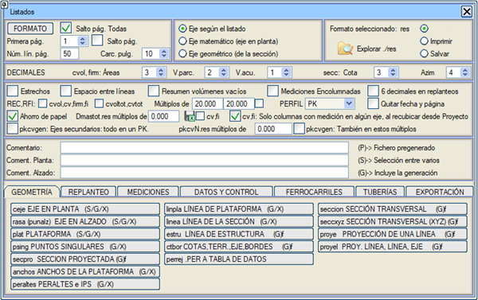
Genel Bilgiler 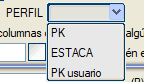Sekmeli raporlar olan cv.res, fi.res, cv0.res,... ENKESİT açılır menüsünde seçtiğimize göre Kazık No veya Kullanıcı KM olarak listelenir. Metraj raporları (cvol.res, firme.res, takip, vb.) hangi kalemlerin listeleneceği seçilerek ve bu malzemelerle sütunlu bir rapor oluşturularak oluşturulabilir. Bunun için iki şey yapmalıyız:
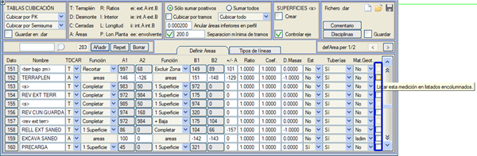
Yeniden metrajlandırırken cvN.xlsx metraj dosyaları oluştur seçeneği. (Hesap tabloları için). Proje'den hesaplanırsa, şu seçeneği de dikkate alır: Sadece herhangi bir güzergahta metrajı olan sütunlar, Proje'den yeniden metrajlandırırken. Bu durumda tüm güzergahların dosyaları aynı sayıda sütuna sahiptir. Sadece bir güzergah yeniden metrajlandırılırsa ve daha önce hesaplanmışsa, sadece o güzergah için bir değere sahip olan metraj sütunları görünecektir. Daha önce hesaplanmamışsa, .dar tablosundaki tüm metrajlar, değerleri olmasa bile görünebilir. cvN.xlsx dosyaları ./res klasörüne kaydedilir ve raporlar iletişim kutusundaki ./res'i keşfetmek için simgeden, gezginde .xlsx türünü seçerek erişilebilir. 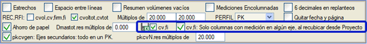
cv_N.xlsx raporlarına benzer şekilde, üstyapı katmanları yeniden metrajlandırıldığında veya yeniden hesaplandığında fi_N.xlsx raporları oluşturulabilir. Proje'den hesaplanırsa, şu seçeneği de dikkate alır: Sadece herhangi bir güzergahta metrajı olan sütunlar, Proje'den yeniden metrajlandırırken. Bu durumda tüm güzergahların dosyaları aynı sayıda sütuna sahiptir. Sadece bir güzergahın üstyapısı yeniden hesaplanırsa ve daha önce hesaplanmışsa, sadece o güzergah için bir değere sahip olan metraj sütunları görünecektir. Daha önce hesaplanmamışsa, .dar tablosundaki tüm metrajlar, değerleri olmasa bile görünebilir. fi_N.xlsx dosyaları ./res klasörüne kaydedilir ve raporlar iletişim kutusundaki ./res'i keşfetmek için simgeden, gezginde .xlsx türünü seçerek erişilebilir. pkcvN.res ... katlarında seçeneği: Sıfırdan farklı bir değer verilirse, ana güzergah üzerindeki izdüşüm KM'si belirtilen değerin en yakın katına yuvarlanır. ceje.res ve cpun.res raporlarında coğrafi koordinatlar ceje.res ve cpun.res raporlarında coğrafi koordinatların yazdırılıp yazdırılmayacağını etkinleştirmek/devre dışı bırakmak için bir seçeneğimiz var. 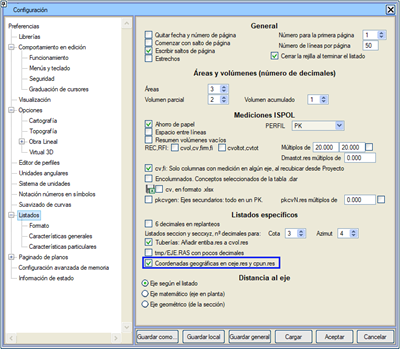 Plan Ekseni PLAN EKSENİ raporu (ceje.res), ceje#.res raporlarından birini seçmeyi (# güzergah numarasıdır) veya plan güzergah elemanları ve karakteristik noktaları hakkında tüm bilgileri içeren yeni bir rapor oluşturmayı sağlar. Yeni bir rapor oluşturulması durumunda, tek bir güzergah için veya aktif olmayan gruplara ait olanlar hariç, projenin tüm güzergahlarını içeren birleşik bir rapor (ceje0.res) olabilir. ceje0.xlsx raporuna güzergah adını içeren bir sütun eklenmiştir. 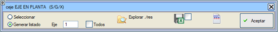
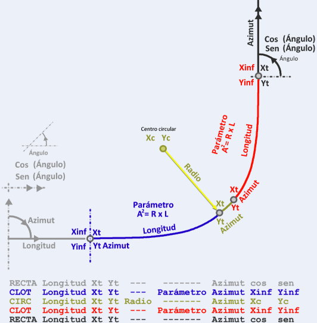
Rapor başlıklarının metinlerini dosyalarda düzenleme ve kaydetme imkanı  . Bu seçenekten, bu raporun sütunlarını hem .res hem de .xlsx formatı için etkinleştirebilir/devre dışı bırakabilirsiniz. . Bu seçenekten, bu raporun sütunlarını hem .res hem de .xlsx formatı için etkinleştirebilir/devre dışı bırakabilirsiniz.Oluştur seçeneğiyle, verilerin Istram gridinde yazdırılması etkinleştirilebilir, bu da .xlsx'e aktarılmasını sağlar. Geçerli bir CRS varsa, teğet noktaları coğrafi koordinatlarda da listelenir; bu seçenek Yapılandırma - Tercihler - Raporlar'dan yapılandırılabilir. Boykesit Ekseni BOYKESİT EKSENİ raporu (rasa.res), rasa#.res'lerden birinin seçimini ister, burada # güzergahın numarasıdır, veya yeni bir rapor oluşturmaya izin verir. İkinci durumda şunlar istenir:
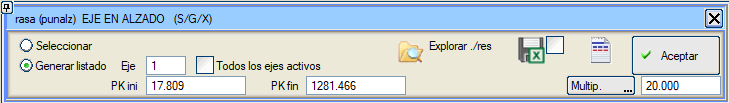
Bu rapor ayrıca hesap tabloları için .xlsx formatında da oluşturulur. İki ayrı rapor oluşturulur: tüm aktif güzergahların veya istenen N güzergahının kırmızı kot durumlarını içeren rasa0.xlsx veya rasaN.xlsx; ve boykesitteki güzergah noktalarını içeren punalz0.xlsx veya punalzN.xlsx. rasa0.xlsx'e güzergah adını içeren bir sütun eklenir. Rapor başlıklarının metinlerini dosyalarda düzenleme ve kaydetme imkanı .Platformun Karakteristik Noktaları PLATFORM raporu (plat.res), bir güzergahın platformunun karakteristik noktalarını içeren plat#.res raporlarından birinin seçimini ister. Bu rapor, platform veya tüm boykesit hesaplandığında oluşturulur. Ayrıca yeni bir rapor oluşturmaya da izin verir. Bu durumda, tüm aktif güzergahları içeren tek bir rapor oluşturma imkanı sunar. [ ] Simetrik rapor seçeneğini kullanarak, eğimler soldan sağa yerine dıştan içe verilir, bu nedenle sağ tarafta işaret değiştirilmiş ve dış taraftaki noktanın altında görünürler. 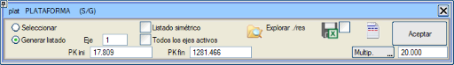
Plan ve Boykesitin Karakteristik Noktaları PLAN VE BOYKESİTİN KARAKTERİSTİK NOKTALARI raporu (psing.res), aşağıdaki yapılandırılabilir raporu oluşturmayı sağlar: 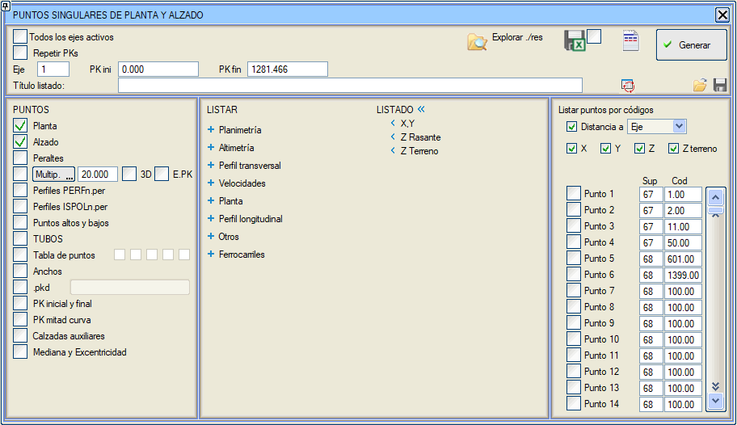
Bir yandan, karakteristik noktaların bulunduğu KM'ler seçilebilir:
Eğer aşağıdaki noktalardan birini listeleme seçenekleri etkinse:
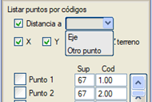
Eğer KM'leri Tekrarla seçeneği etkinleştirilirse, aynı KM, iki farklı olay tarafından listelenecekse iki kez gösterilecektir. Ayrıca S şeklindeki klotoid çiftlerinin sonsuz yarıçaplı noktasını da gösterecektir, böylece kurp değişiminde her iki anahtar da görünecektir. Eğer aplikasyonlarda 6 ondalık seçeneği etkinleştirilirse, bu raporda (psing.res) KM, x ve y verilerini 6 ondalık basamakla elde ederiz. Bu rapor demiryolları için uyarlanmıştır. Eğimler binde olarak ve deverler milimetre olarak yazdırılır. Raporun Istram gridinde oluşturulması seçilebilir, böylece .xlsx formatında kaydedilebilir. Eğer böyle yapılırsa, N güzergahı için psingN.xlsx dosyası veya tüm aktif güzergahlar seçilirse psing0.xlsx dosyası otomatik olarak kaydedilir. Rapor başlıklarının metinlerini dosyalarda düzenleme ve kaydetme imkanı . Projelendirilen Kesit Kırmızı kot (67) ile subrasante (68) ve duruma göre uygun olmayan zemindeki yarma (69) tamamlanarak bir yüzey oluşturulur. Soldan sağa noktalarının bir raporu oluşturulur ve şunlar listelenir: Eksene olan mesafe, Kot ve iki nokta arasındaki enine eğim. Platform Genişlikleri Platformun tüm genişliklerinin (her bir taşıt yolu, banket, palye, orta refüj vb.) istenen KM'ler boyunca ve seçilen enkesitlerde bir raporunu oluşturur. Başlıkları düzenlemeyi ve raporu bir hesap tablosuna aktarmak için veri gridi üzerinde oluşturmayı sağlar. 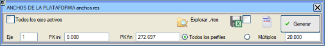
Deverler ve IP'ler Kurpların deverlerinin ve klotoidler üzerindeki IP'lerin bir raporunu oluşturur ve güzergaha bağlı .tpe tablosuna göre yönetmeliğe uymayanları kırmızı ile işaretler. 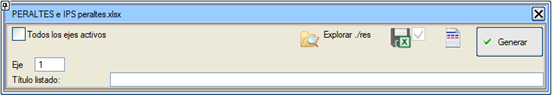
Platform Çizgisi PLATFORM ÇİZGİSİ raporu (linpla.res, .xlsx formatında da oluşturulabilir), PLATFORMUN herhangi bir noktasının veya ona referanslı bir noktanın raporunu oluşturmayı sağlar: 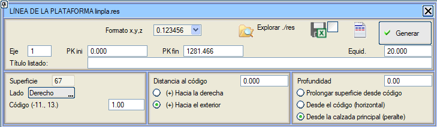
Referans noktalarının kodları şunlar olabilir:
Ayrıca kaldırımların ve sabit platformların noktaları da en fazla 6 veri olmak üzere dahil edilebilir. Butona tıklayarak başlıkları düzenlemeye izin verilir.Kesit Çizgisi KESİT ÇİZGİSİ raporu (linea.res), platformun herhangi bir boyuna çizgisinin, enkesit içindeki yüzey ve anahtar tanımlayıcısıyla verilen, aplikasyonu için bir rapordur. Güzergah, başlangıç ve bitiş KM'si, ve listelenen paralelin yanal ve kot mesafesi belirtilmelidir. 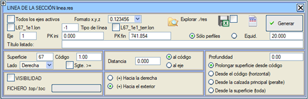
Sgte.>= seçeneği, listelenen kodun tam olması gerekmediğini, belirtilenden büyük veya eşit ilk kodun arandığını programa bildiren bir kontroldür. Rapor satırının sonunda her durumda bulunan kod belirtilir. Eğer L67_1e1.lon Oluştur kutucuğu etkinleştirilirse, listelenen çizginin .lon boykesit dosyası olan Lxxx_codyyy_taraf.lon dosyası oluşturulur (burada xxx yüzey, kod, yyy güzergah numarası ve taraftır). Her iki taraf için aynı anda bir rapor oluşturulabilir. Bu raporla oluşturulan boykesit profili adlarına, kodun yanı sıra taraf bilgisi de eklenir. Örn. L67e1_s.lon, L67e1_i.lon. Eşit aralıkla rapor istenmesi durumunda, Ispol.per'de bir ara enkesit yoksa, o enkesit anında yeniden hesaplanır ve hiçbir değer enterpole edilmez. Bu KM'ler raporda "i" ile etiketlenecektir. Derinlik değerleri şu seçeneklerden birine göre verilebilir:
Bu rapor oluşturulurken, geçerli bir tip tanımlanırsa çizgi harita üzerine oluşturulabilir. Bu rapor, burada tanımlanan tüm noktalar için, bir .top veya .toc dosyasında bulunan başka bir nokta kümesinden görünürlüğü analiz etme imkanı sunar. Bu seçenek etkinleştirilirse, her bir nokta çifti arasında görünürlük olup olmadığını belirten vis.res raporu oluşturulur. Eş zamanlı olarak, analiz için kullanılan dört yüzeyi içeren vis.per enkesit dosyası oluşturulur:
Sanat Yapısı Çizgisi SANAT YAPISI ÇİZGİSİ raporu (estru.res), platform çizgisi raporuna benzer, ancak derinlikler sadece dikey olarak ölçülmekle kalmaz, aynı zamanda dever ve boyuna eğimle oluşan yüzeye normal olarak da ölçülebilir. Demiryolu güzergahları durumunda, bu rapor referans yüzeyi olarak 67 (kırmızı kot) yerine 46'yı (alt balast tavanı) kullanmayı sağlar. 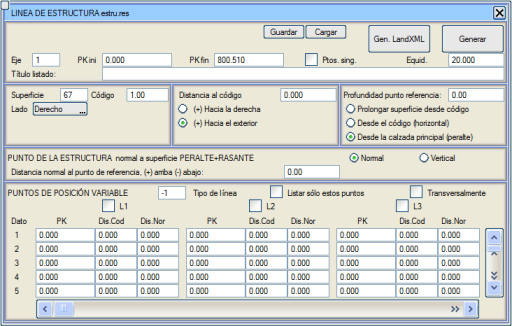
Ayrıca Kar. Nok. seçeneği etkinleştirilirse, güzergahın karakteristik noktalarının (giriş ve çıkış teğetleri, someler, tepe ve çukur noktaları, genişlik kanunu, deverler, dever eksenleri, orta refüj ve yardımcı taşıt yolları) KM'leri de eklenir. Ayrıca, aşağıda yorumlanan L1, L2,... çizgilerinin KM verilerini de içerir. Sanat yapısının noktası, referans noktasından olan derinliğe göre hesaplanır. Daha önce belirtildiği gibi, bu derinlik DEVER+KIRMIZI KOT yüzeyine normal (varsayılan seçenek) veya dikey olarak verilebilir. Eğer sanat yapısının tek bir noktası yerine birkaç aplikasyon çizgisi ve ayrıca eksene değişken mesafelerle elde edilmek isteniyorsa, o zaman menünün alt kısmında bulunan değişken konumlu noktalar kullanılmalıdır. Bu konum, her bir çizgi için en fazla 20 adet KM, koda olan mesafe ve referans noktasındaki yüzeye normal mesafe verisi girilerek tanımlanabilir. Ayrıca, menüde geçerli bir tip tanımlanırsa tüm çizgileri 3D olarak çizmek de mümkündür. Referans noktasının derinliğinin ana taşıt yolundan (deveri dikkate alarak) hesaplandığı ve referans noktasının kodunun bir karayolu projesinde 1 olduğu durumda, negatif mesafeler kullanıldığında, belirtilen tarafın deverini uzatmak yerine, eksenin diğer tarafının deveri aranacaktır. Eğer Sadece bu noktaları listele kutucuğu etkinleştirilirse, o zaman raporda sadece aşağıda belirtilen değişken konumlu noktalar gösterilir. Enine seçeneği etkinleştirildiğinde, raporda her bir KM için değişken konumlu noktalar art arda yazdırılır. Bu durumda, boyuna çizgiler yerine enine çizgiler (L1, L2, L3,...) çizilir. Rapor, her bir çizgi için tanımlanan ilk ve son KM arasında ve menüde girilen eşit aralığa göre oluşturulur. Bu menü, rapor için veri tanımını kaydetmeyi/yüklemeyi (.les uzantılı dosyalar) ve ayrıca raporun kendisini LandXML standardına göre oluşturmayı ([LandXML Oluştur] butonu) sağlar. Arazi, Eksen ve Kenar Kotları ARAZİ, EKSEN ve KENAR KOTLARI raporu (ctbor.res), her bir güzergah için (ctbor1.res, ctbor2.res,...) eş zamanlı bir rapor oluşturur. Bu raporlar, arazi kotu, kırmızı kot (veya çift taşıt yolu durumunda kırmızı kotlar) ve her bir enkesitin yarma başı (D) ve dolgu eteği (T) kotları ve eksene olan mesafesine ilişkin verileri içerir veya belirli bir eşit aralığa göre: 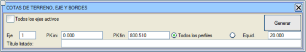
Ayrıca tüm aktif güzergahları içeren bir rapor (ctbortot.res) oluşturmaya da olanak tanır. Per'den veri tablosuna Bir enkesit dosyasında saklanan bilgileri veri tablosuna yükleyen bu rapor, her satırda şunları içerir: KM, EKSENE MESAFE, KOT, YÜZEY, GÜZERGAH ADI Raporun geri dönüşler veya dikey noktalar olmadan çıkmasını isteyip istemediğimizi etkinleştirebileceğimiz bir yapılandırma menümüz var. Aynı menüde, belirtilen geri dönüşler veya dikey noktalar bulunduğunda uygulanacak eksene olan mesafe artışını belirtebiliriz. Tam Enkesit ENKESİT raporu (seccion.res), enkesitin tüm segmentlerini eksene olan mesafeler, kot ve her bir kesimin eğimi olarak listeler. Her enkesit, raporun bir sayfasını kaplar. Kazı-dolgu işleri sırasında çok kullanışlı bir rapordur. 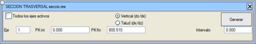
Tüm aktif güzergahlar kutucuğu etkinleştirildiğinde, aktif gruplardaki tüm güzergahların geometrisini içeren bir rapor oluşturulur. Eş zamanlı olarak her bir güzergah için bir rapor oluşturulur: seccion1.res, seccion2.res... Önceki raporun ENKESİT (XYZ) (seccxyz.res) raporundan farkı, ikincisinin her bir noktanın koordinatlarını içermesidir. Bir Çizginin Bir Eksen Üzerindeki İzdüşümleri BİR ÇİZGİNİN İZDÜŞÜMÜ raporu (proye.res), bir veya daha fazla 3D çizginin bir eksen üzerine yansıtılması sonucu oluşur, böylece aralarındaki sapmalar ve nerede meydana geldikleri analiz edilebilir. Bir kullanım örneği, sahada ölçülen bir poligon (ray) ile hat fleşlemesi için teorik tasarım ekseni arasındaki karşılaştırmadır. Ayrıca, çizginin eksen KM'lerindeki bir boykesiti olan bir .lon dosyası da oluşturur. 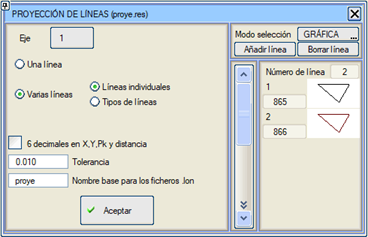
Rapor birden fazla çizgi için yapıldığında (birçok çizgi), diyalog kutusuna eklenen veya çıkarılan tek tek çizgiler veya tiplere göre seçilebilir. Koordinatlar ve mesafeler listelenir ve ayrıca, BÖLGE (A: SĞ-Yukarı, B: SĞ-Aşağı, C: SL-Aşağı, D: SL-Yukarı). Eğer X, Y, KM ve mesafede 6 ondalık kutucuğu etkinleştirilirse, koordinatlar, mesafe ve KM'yi 6 ondalıkla listelemeyi başarırız. Rapor ayrıca seçilen çizgilerin tiplerini de içerir. Eğer 3D mesafe belirtilen toleranstan daha küçükse, bölge sütununda ayrıca "ok" etiketlenir. BİR ÇİZGİNİN BİR EKSENİN YÖNÜNE GÖRE BAŞKA BİR ÇİZGİ ÜZERİNDEKİ İZDÜŞÜMÜ raporu (proyel.res), bir çizginin izdüşümü gibidir, ancak mesafeler ve kot farkları başka bir referans çizgisine göre ölçülür. Mesafeler mevcut eksene normal olarak ölçülür ve ilgili KM de verilir. Ayrıca, çizginin eksen KM'lerindeki bir boykesiti olan bir .lon dosyası da oluşturur. |